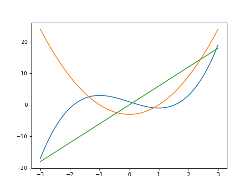
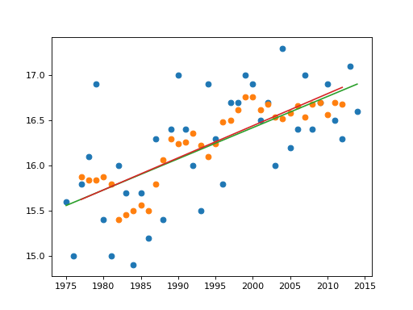
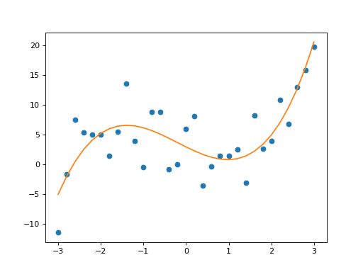
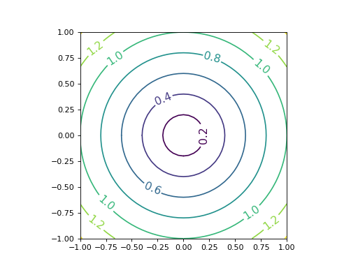
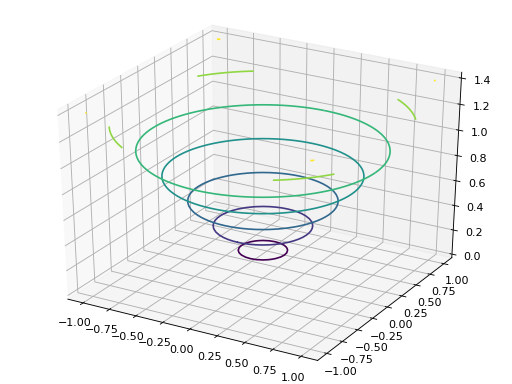
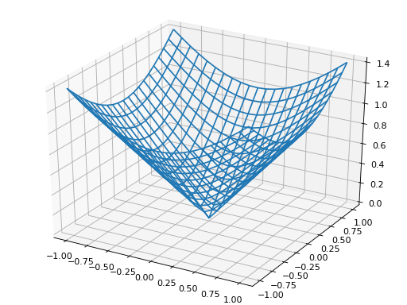
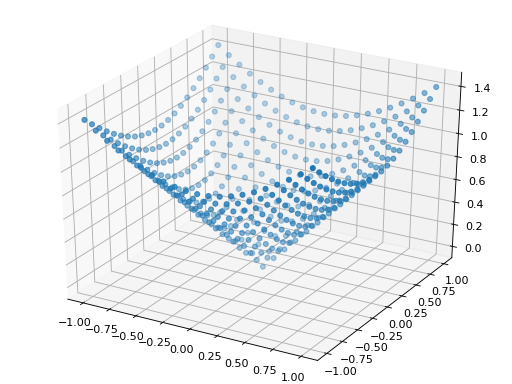

>>> a = np.array([1.0, 1.0])
>>> b = np.array([1.0, 1.0, 1.0])
>>> np.linalg.norm(b)
1.7320508075688772
>>> c = np.array([[2, 3], [1, 2]])
>>> c
array([[2, 3],
[1, 2]])
>>> np.linalg.inv(c)
array([[ 2., -3.],
[-1., 2.]])
>>> c @ np.linalg.inv(c)
array([[1., 0.],
[0., 1.]])
>>> np.linalg.det(c)
1.0
>>> np.linalg.matrix_rank(c)
2
>>> np.trace(c)
4
x + y = 100 2x + 4y = 272
>>> a = np.array([[1, 1], [2, 4]]) >>> b = np.array([100, 272]) >>> np.linalg.solve(a, b) array([64., 36.]) >>> np.linalg.inv(a) @ b array([64., 36.])
x + y + z = 10 2x + 4y + 6z = 38 2x + 4z = 14
>>> a = np.array([[1, 1, 1], [2, 4, 6], [2, 0, 4]]) >>> b = np.array([10, 38, 14]) >>> np.linalg.solve(a, b) array([3., 5., 2.]) >>> np.linalg.inv(a) @ b array([3., 5., 2.])
>>> a = np.array([1, 2, 3])
>>> b = np.array([4, 5, 6])
>>> np.inner(a, b)
32
>>> a @ b
32
>>> c = np.array([[1, 2], [3, 4]])
>>> d = np.array([[5, 6], [7, 8]])
>>> np.inner(c, d)
array([[17, 23],
[39, 53]])
>>> c @ d.T
array([[17, 23],
[39, 53]])
>>> c @ d
array([[19, 22],
[43, 50]])
>>> e = np.arange(9).reshape((3, 3))
>>> e
array([[0, 1, 2],
[3, 4, 5],
[6, 7, 8]])
>>> np.inner(e, a)
array([ 8, 26, 44])
>>> e @ a
array([ 8, 26, 44])
>>> np.inner(c, 10)
array([[10, 20],
[30, 40]])
>>> np.inner(10, c)
array([[10, 20],
[30, 40]])
>>> np.outer(a, b)
array([[ 4, 5, 6],
[ 8, 10, 12],
[12, 15, 18]])
>>> np.outer(c, d)
array([[ 5, 6, 7, 8],
[10, 12, 14, 16],
[15, 18, 21, 24],
[20, 24, 28, 32]])
>>> np.linalg.matrix_power(np.array([[1, 0], [0, 1]]), 2)
array([[1, 0],
[0, 1]])
>>> np.linalg.matrix_power(np.array([[1, 0], [0, 1]]), 10)
array([[1, 0],
[0, 1]])
>>> np.linalg.matrix_power(np.array([[1, 1], [1, 0]]), 2)
array([[2, 1],
[1, 1]])
>>> np.linalg.matrix_power(np.array([[1, 1], [1, 0]]), 3)
array([[3, 2],
[2, 1]])
>>> np.linalg.matrix_power(np.array([[1, 1], [1, 0]]), 4)
array([[5, 3],
[3, 2]])
>>> np.linalg.matrix_power(np.array([[1, 1], [1, 0]]), 10)
array([[89, 55],
[55, 34]])
>>> np.linalg.matrix_power(np.array([[1, 1], [1, 0]]), 40)
array([[165580141, 102334155],
[102334155, 63245986]])
>>> a = np.arange(9).reshape((3, 3))
>>> a
array([[0, 1, 2],
[3, 4, 5],
[6, 7, 8]])
>>> b = np.arange(10, 19).reshape((3, 3))
>>> b
array([[10, 11, 12],
[13, 14, 15],
[16, 17, 18]])
>>> np.concatenate((a, b), axis=0)
array([[ 0, 1, 2],
[ 3, 4, 5],
[ 6, 7, 8],
[10, 11, 12],
[13, 14, 15],
[16, 17, 18]])
>>> np.concatenate((a, b), axis=1)
array([[ 0, 1, 2, 10, 11, 12],
[ 3, 4, 5, 13, 14, 15],
[ 6, 7, 8, 16, 17, 18]])
>>> np.hstack((a, b))
array([[ 0, 1, 2, 10, 11, 12],
[ 3, 4, 5, 13, 14, 15],
[ 6, 7, 8, 16, 17, 18]])
>>> np.vstack((a, b))
array([[ 0, 1, 2],
[ 3, 4, 5],
[ 6, 7, 8],
[10, 11, 12],
[13, 14, 15],
[16, 17, 18]])
>>> np.dstack((a, b))
array([[[ 0, 10],
[ 1, 11],
[ 2, 12]],
[[ 3, 13],
[ 4, 14],
[ 5, 15]],
[[ 6, 16],
[ 7, 17],
[ 8, 18]]])
>>> c = np.arange(1, 6)
>>> d = np.arange(6, 11)
>>> c
array([1, 2, 3, 4, 5])
>>> d
array([6, 7, 8, 9, 10])
>>> np.hstack((c, d))
array([ 1, 2, 3, 4, 5, 6, 7, 8, 9, 10])
>>> np.vstack((c, d))
array([[ 1, 2, 3, 4, 5],
[ 6, 7, 8, 9, 10]])
>>> np.dstack((c, d))
array([[[ 1, 6],
[ 2, 7],
[ 3, 8],
[ 4, 9],
[ 5, 10]]])
>>> a = np.arange(10)
>>> a
array([0, 1, 2, 3, 4, 5, 6, 7, 8, 9])
>>> np.split(a, 5)
[array([0, 1]), array([2, 3]), array([4, 5]), array([6, 7]), array([8, 9])]
>>> np.array_split(a, 3)
[array([0, 1, 2, 3]), array([4, 5, 6]), array([7, 8, 9])]
>>> np.split(a, [4])
[array([0, 1, 2, 3]), array([4, 5, 6, 7, 8, 9])]
>>> np.split(a, [2, 7])
[array([0, 1]), array([2, 3, 4, 5, 6]), array([7, 8, 9])]
>>> b = np.arange(1, 9).reshape(2, 4)
>>> b
array([[1, 2, 3, 4],
[5, 6, 7, 8]])
>>> np.hsplit(b, 2)
[array([[1, 2],
[5, 6]]), array([[3, 4],
[7, 8]])]
>>> np.vsplit(b, 2)
[array([[1, 2, 3, 4]]), array([[5, 6, 7, 8]])]
>>> c = np.arange(1, 9).reshape((2, 2, 2))
>>> c
array([[[1, 2],
[3, 4]],
[[5, 6],
[7, 8]]])
>>> np.dsplit(c, 2)
[array([[[1],
[3]],
[[5],
[7]]]), array([[[2],
[4]],
[[6],
[8]]])]
delete(a, obj, axis=None) insert(a, obj, values, axis=None)
>>> a = np.arange(10, 26).reshape((4, 4))
>>> a
array([[10, 11, 12, 13],
[14, 15, 16, 17],
[18, 19, 20, 21],
[22, 23, 24, 25]])
>>> np.delete(a, 1, 0)
array([[10, 11, 12, 13],
[18, 19, 20, 21],
[22, 23, 24, 25]])
>>> np.delete(a, 1, 1)
array([[10, 12, 13],
[14, 16, 17],
[18, 20, 21],
[22, 24, 25]])
>>> np.delete(a, [0, 2], 0)
array([[14, 15, 16, 17],
[22, 23, 24, 25]])
>>> np.delete(a, [0, 2, 4, 6], None)
array([11, 13, 15, 17, 18, 19, 20, 21, 22, 23, 24, 25])
>>> np.insert(a, 0, 99, 0)
array([[99, 99, 99, 99],
[10, 11, 12, 13],
[14, 15, 16, 17],
[18, 19, 20, 21],
[22, 23, 24, 25]])
>>> np.insert(a, 0, 99, 1)
array([[99, 10, 11, 12, 13],
[99, 14, 15, 16, 17],
[99, 18, 19, 20, 21],
[99, 22, 23, 24, 25]])
>>> np.insert(a, 0, 99, None)
array([99, 10, 11, 12, 13, 14, 15, 16, 17, 18, 19, 20, 21, 22, 23, 24, 25])
>>> np.insert(a, 2, [1, 2, 3, 4], 0)
array([[10, 11, 12, 13],
[14, 15, 16, 17],
[ 1, 2, 3, 4],
[18, 19, 20, 21],
[22, 23, 24, 25]])
>>> np.insert(a, 2, [1, 2, 3, 4], 1)
array([[10, 11, 1, 12, 13],
[14, 15, 2, 16, 17],
[18, 19, 3, 20, 21],
[22, 23, 4, 24, 25]])
>>> np.insert(a, 2, [1, 2, 3, 4], None)
array([10, 11, 1, 2, 3, 4, 12, 13, 14, 15, 16, 17, 18, 19, 20, 21, 22,
23, 24, 25])
>>> a = np.arange(8).reshape((2, 4))
>>> a
array([[0, 1, 2, 3],
[4, 5, 6, 7]])
>>> np.swapaxes(a, 0, 1)
array([[0, 4],
[1, 5],
[2, 6],
[3, 7]])
>>> b = np.arange(8).reshape((2,2,2))
>>> b
array([[[0, 1],
[2, 3]],
[[4, 5],
[6, 7]]])
>>> np.swapaxes(b, 1, 0)
array([[[0, 1],
[4, 5]],
[[2, 3],
[6, 7]]])
>>> np.swapaxes(b, 0, 2)
array([[[0, 4],
[2, 6]],
[[1, 5],
[3, 7]]])
>>> a = np.arange(9, 0, -1).reshape((3, 3))
>>> a
array([[9, 8, 7],
[6, 5, 4],
[3, 2, 1]])
>>> np.sort(a)
array([[7, 8, 9],
[4, 5, 6],
[1, 2, 3]])
>>> a
array([[9, 8, 7],
[6, 5, 4],
[3, 2, 1]])
>>> np.sort(a, axis=0)
array([[3, 2, 1],
[6, 5, 4],
[9, 8, 7]])
>>> np.sort(a, axis=None)
array([1, 2, 3, 4, 5, 6, 7, 8, 9])
>>> a.sort(axis=0)
>>> a
array([[3, 2, 1],
[6, 5, 4],
[9, 8, 7]])
>>> a.sort(axis=1)
>>> a
array([[1, 2, 3],
[4, 5, 6],
[7, 8, 9]])
>>> a = np.array([[1, 2, 3, 4]])
>>> a
array([[1, 2, 3, 4]])
>>> a.shape
(1, 4)
>>> b = np.array([5, 6, 7, 8])
>>> b
array([5, 6, 7, 8])
>>> b.shape
(4,)
>>> a + b
array([[ 6, 8, 10, 12]])
>>> b + a
array([[ 6, 8, 10, 12]])
>>> c = np.arange(16).reshape((4, 4))
>>> c
array([[ 0, 1, 2, 3],
[ 4, 5, 6, 7],
[ 8, 9, 10, 11],
[12, 13, 14, 15]])
>>> c + a
array([[ 1, 3, 5, 7],
[ 5, 7, 9, 11],
[ 9, 11, 13, 15],
[13, 15, 17, 19]])
>>> c + b
array([[ 5, 7, 9, 11],
[ 9, 11, 13, 15],
[13, 15, 17, 19],
[17, 19, 21, 23]])
>>> a.T
array([[1],
[2],
[3],
[4]])
>>> a + a.T
array([[2, 3, 4, 5],
[3, 4, 5, 6],
[4, 5, 6, 7],
[5, 6, 7, 8]])
>>> c + a.T
array([[ 1, 2, 3, 4],
[ 6, 7, 8, 9],
[11, 12, 13, 14],
[16, 17, 18, 19]])
>>> a = np.arange(16).reshape((4, 4))
>>> a
array([[ 0, 1, 2, 3],
[ 4, 5, 6, 7],
[ 8, 9, 10, 11],
[12, 13, 14, 15]])
>>> np.savetxt('a.txt', a)
>>> np.loadtxt('a.txt')
array([[ 0., 1., 2., 3.],
[ 4., 5., 6., 7.],
[ 8., 9., 10., 11.],
[12., 13., 14., 15.]])
0.000000000000000000e+00 1.000000000000000000e+00 2.000000000000000000e+00 3.000000000000000000e+00
4.000000000000000000e+00 5.000000000000000000e+00 6.000000000000000000e+00 7.000000000000000000e+00
8.000000000000000000e+00 9.000000000000000000e+00 1.000000000000000000e+01 1.100000000000000000e+01
1.200000000000000000e+01 1.300000000000000000e+01 1.400000000000000000e+01 1.500000000000000000e+01
図 : a.txt の内容
>>> np.save('a', a)
>>> b = np.load('a.npy')
>>> b
array([[ 0, 1, 2, 3],
[ 4, 5, 6, 7],
[ 8, 9, 10, 11],
[12, 13, 14, 15]])
>>> b.dtype
dtype('int32')
>>> a.astype(np.float_)
array([[ 0., 1., 2., 3.],
[ 4., 5., 6., 7.],
[ 8., 9., 10., 11.],
[12., 13., 14., 15.]])
>>> np.save('b', a.astype(np.float_))
>>> b = np.load('b.npy')
>>> b
array([[ 0., 1., 2., 3.],
[ 4., 5., 6., 7.],
[ 8., 9., 10., 11.],
[12., 13., 14., 15.]])
>>> b.dtype
dtype('float64')
>>> a = np.arange(9)
>>> b = np.arange(9).reshape((3, 3))
>>> c = np.arange(8).reshape((2, 2, 2))
>>> a
array([0, 1, 2, 3, 4, 5, 6, 7, 8])
>>> b
array([[0, 1, 2],
[3, 4, 5],
[6, 7, 8]])
>>> c
array([[[0, 1],
[2, 3]],
[[4, 5],
[6, 7]]])
>>> np.savez('test', a, b, c)
>>> npz = np.load('test.npz')
>>> type(npz)
<class 'numpy.lib.npyio.NpzFile'>
>>> npz.files
['arr_0', 'arr_1', 'arr_2']
>>> npz['arr_0']
array([0, 1, 2, 3, 4, 5, 6, 7, 8])
>>> npz['arr_1']
array([[0, 1, 2],
[3, 4, 5],
[6, 7, 8]])
>>> npz['arr_2']
array([[[0, 1],
[2, 3]],
[[4, 5],
[6, 7]]])
>>> np.savez('test', a = a, b = b, c = c)
>>> npz = np.load('test.npz')
>>> npz.files
['a', 'b', 'c']
>>> npz['a']
array([0, 1, 2, 3, 4, 5, 6, 7, 8])
>>> npz['b']
array([[0, 1, 2],
[3, 4, 5],
[6, 7, 8]])
>>> npz['c']
array([[[0, 1],
[2, 3]],
[[4, 5],
[6, 7]]])
>>> a = np.arange(6).reshape(2, 3)
>>> a
array([[0, 1, 2],
[3, 4, 5]])
>>> b = np.arange(10, 16).reshape(2, 3)
>>> b
array([[10, 11, 12],
[13, 14, 15]])
>>> np.r_[a, b]
array([[ 0, 1, 2],
[ 3, 4, 5],
[10, 11, 12],
[13, 14, 15]])
>>> np.vstack((a, b))
array([[ 0, 1, 2],
[ 3, 4, 5],
[10, 11, 12],
[13, 14, 15]])
>>> np.c_[a, b]
array([[ 0, 1, 2, 10, 11, 12],
[ 3, 4, 5, 13, 14, 15]])
>>> np.hstack((a, b))
array([[ 0, 1, 2, 10, 11, 12],
[ 3, 4, 5, 13, 14, 15]])
>>> np.r_[1, 2, 3, [4, 5, 6], [0] * 3]
array([1, 2, 3, 4, 5, 6, 0, 0, 0])
>>> np.r_[0:10:2]
array([0, 2, 4, 6, 8])
>>> np.c_[[1, 2, 3], [10, 20, 30]]
array([[ 1, 10],
[ 2, 20],
[ 3, 30]])
>>> x = np.array([[1], [2], [3]])
>>> y = np.array([[10], [20], [30]])
>>> x
array([[1],
[2],
[3]])
>>> y
array([[10],
[20],
[30]])
>>> np.c_[x, y]
array([[ 1, 10],
[ 2, 20],
[ 3, 30]])
>>> np.hstack((x, y))
array([[ 1, 10],
[ 2, 20],
[ 3, 30]])
>>> np.r_['0', a, b]
array([[ 0, 1, 2],
[ 3, 4, 5],
[10, 11, 12],
[13, 14, 15]])
>>> np.r_['1', a, b]
array([[ 0, 1, 2, 10, 11, 12],
[ 3, 4, 5, 13, 14, 15]])
>>> np.r_['0, 2', [1, 2, 3], [4, 5, 6]]
array([[1, 2, 3],
[4, 5, 6]])
>>> np.r_['1, 2', [1, 2, 3], [4, 5, 6]]
array([[1, 2, 3, 4, 5, 6]])
>>> np.r_['-1, 2, 0', [1, 2, 3], [4, 5, 6]]
array([[1, 4],
[2, 5],
[3, 6]])
numpy.ix_([x0, x1, ..., xn], [y0, y1, ..., ym]) => インデックス配列
>>> a = np.arange(25).reshape((5, 5))
>>> a
array([[ 0, 1, 2, 3, 4],
[ 5, 6, 7, 8, 9],
[10, 11, 12, 13, 14],
[15, 16, 17, 18, 19],
[20, 21, 22, 23, 24]])
>>> b = np.ix_([1, 3], [0, 2, 4])
>>> b
(array([[1],
[3]]), array([[0, 2, 4]]))
>>> c = a[b]
>>> c
array([[ 5, 7, 9],
[15, 17, 19]])
>>> a[b] = 0
>>> a
array([[ 0, 1, 2, 3, 4],
[ 0, 6, 0, 8, 0],
[10, 11, 12, 13, 14],
[ 0, 16, 0, 18, 0],
[20, 21, 22, 23, 24]])
>>> c
array([[ 5, 7, 9],
[15, 17, 19]])
>>> a = np.array([[1, 2, 3],[4, 5, 6]])
>>> a
array([[1, 2, 3],
[4, 5, 6]])
>>> for x in a: print(x)
...
[1 2 3]
[4 5 6]
>>> for x in a:
... for y in x: print(y)
...
1
2
3
4
5
6
>>> for x in a.flat: print(x)
...
1
2
3
4
5
6
>>> for i, x in np.ndenumerate(a): print(i, x)
...
(0, 0) 1
(0, 1) 2
(0, 2) 3
(1, 0) 4
(1, 1) 5
(1, 2) 6
>>> for i in np.ndindex((2, 3)): print(i)
...
(0, 0)
(0, 1)
(0, 2)
(1, 0)
(1, 1)
(1, 2)
>>> for i in np.ndindex((2, 3)): print(i, a[i])
...
(0, 0) 1
(0, 1) 2
(0, 2) 3
(1, 0) 4
(1, 1) 5
(1, 2) 6
>>> a = np.array([1, 2, 3, 4]) >>> b = np.array([3, 4, 5, 6]) >>> np.union1d(a, b) array([1, 2, 3, 4, 5, 6]) >>> np.intersect1d(a, b) array([3, 4]) >>> np.setdiff1d(a, b) array([1, 2]) >>> np.setxor1d(a, b) array([1, 2, 5, 6]) >>> np.in1d(a, b) array([False, False, True, True]) >>> np.in1d(b, a) array([ True, True, False, False]) >>> np.in1d(a, a) array([ True, True, True, True]) >>> c = np.array([5, 4, 3, 2, 1, 3, 5, 7, 0]) >>> c array([5, 4, 3, 2, 1, 3, 5, 7, 0]) >>> np.unique(c) array([0, 1, 2, 3, 4, 5, 7]) >>> c array([5, 4, 3, 2, 1, 3, 5, 7, 0]) >>> np.unique(np.array([[3, 2, 1], [6, 5, 4], [2, 4, 6]])) array([1, 2, 3, 4, 5, 6])
>>> def issubset(xs, ys): return np.all(np.in1d(xs, ys)) ... >>> issubset(a, b) False >>> issubset(a, np.union1d(a, b)) True >>> issubset(a, a) True
>>> a = np.arange(1, 11)
>>> a
array([ 1, 2, 3, 4, 5, 6, 7, 8, 9, 10])
>>> np.sum(a)
55
>>> np.cumsum(a)
array([ 1, 3, 6, 10, 15, 21, 28, 36, 45, 55], dtype=int32)
>>> np.prod(a)
3628800
>>> np.cumprod(a)
array([ 1, 2, 6, 24, 120, 720, 5040,
40320, 362880, 3628800], dtype=int32)
>>> np.diff(a)
array([1, 1, 1, 1, 1, 1, 1, 1, 1])
>>> np.diff(a, n=2)
array([0, 0, 0, 0, 0, 0, 0, 0])
>>> np.diff(a, n=0)
array([ 1, 2, 3, 4, 5, 6, 7, 8, 9, 10])
>>> np.ediff1d(a)
array([1, 1, 1, 1, 1, 1, 1, 1, 1])
>>> np.ediff1d(a, to_end=2, to_begin=0)
array([0, 1, 1, 1, 1, 1, 1, 1, 1, 1, 2])
>>> xs = np.arange(11) >>> xs array([ 0, 1, 2, 3, 4, 5, 6, 7, 8, 9, 10]) >>> fs = xs ** 2 >>> fs array([ 0, 1, 4, 9, 16, 25, 36, 49, 64, 81, 100], dtype=int32) >>> zs1 = np.gradient(fs, xs) >>> zs1 array([ 1., 2., 4., 6., 8., 10., 12., 14., 16., 18., 19.]) >>> np.gradient(zs1, xs) array([1. , 1.5, 2. , 2. , 2. , 2. , 2. , 2. , 2. , 1.5, 1. ]) >>> zs2 = np.gradient(fs, xs, edge_order = 2) >>> zs2 array([ 0., 2., 4., 6., 8., 10., 12., 14., 16., 18., 20.]) >>> np.gradient(zs2, xs) array([2., 2., 2., 2., 2., 2., 2., 2., 2., 2., 2.])
リスト : gradient() の簡単な使用例
import numpy as np
import matplotlib.pyplot as plt
x = np.linspace(-3, 3, 6001)
y = x ** 3 - x * 3 + 1 # x3 - 3x + 1
z1 = np.gradient(y, x, edge_order = 2) # 3x2 - 3
z2 = np.gradient(z1, x, edge_order = 2) # 6x
plt.plot(x, y)
plt.plot(x, z1)
plt.plot(x, z2)
# plt.savefig('grad.png', dpi=80)
plt.show()

リスト : 数値積分 (円周率を求める)
import numpy as np
n = 10
for _ in range(5):
# 中点則
w = 1 / n
a = (np.arange(1, n + 1) - 0.5) * w
b = 4.0 / (1.0 + a ** 2)
p1 = np.sum(b) * w
print(n, p1, np.pi - p1)
# 台形則
c = np.linspace(0, 1, n + 1)
d = 4.0 / (1.0 + c ** 2)
p2 = np.trapz(d) * w
print(n, p2, np.pi - p2)
# シンプソン則
p3 = (p1 * 2 + p2) / 3
print(n, p3, np.pi - p3)
n *= 10
C>python test.py 10 3.1424259850010987 -0.0008333314113055934 10 3.1399259889071587 0.0016666646826344333 10 3.1415926529697855 6.200076008155975e-10 100 3.1416009869231245 -8.333333331389525e-06 100 3.1415759869231277 1.6666666665443586e-05 100 3.141592653589792 1.3322676295501878e-15 1000 3.1415927369231267 -8.33333335670261e-08 1000 3.141592486923127 1.6666666624587378e-07 1000 3.141592653589793 0.0 10000 3.1415926544231265 -8.333334022836425e-10 10000 3.1415926519231268 1.6666663604780751e-09 10000 3.141592653589793 0.0 100000 3.1415926535981273 -8.334222201256125e-12 100000 3.1415926535731273 1.666577986725315e-11 100000 3.1415926535897944 -1.3322676295501878e-15
>>> a = np.array([0, 0, 0, 0, 0, 1, 1, 1, 1, 1, 0, 0, 0, 0, 0]) >>> np.convolve(a, [1, 1, 1, 1, 1]) array([0, 0, 0, 0, 0, 1, 2, 3, 4, 5, 4, 3, 2, 1, 0, 0, 0, 0, 0]) >>> np.convolve(a, [1, 1, 1, 1, 1], mode='same') array([0, 0, 0, 1, 2, 3, 4, 5, 4, 3, 2, 1, 0, 0, 0]) >>> np.convolve(a, [1, 1, 1, 1, 1], mode='valid') array([0, 1, 2, 3, 4, 5, 4, 3, 2, 1, 0])
リスト : 移動平均法
import numpy as np
import matplotlib.pyplot as plt
# 東京の年平均気温 (1975 - 2014)
data = np.array([
15.6, 15.0, 15.8, 16.1, 16.9, 15.4, 15.0, 16.0, 15.7, 14.9,
15.7, 15.2, 16.3, 15.4, 16.4, 17.0, 16.4, 16.0, 15.5, 16.9,
16.3, 15.8, 16.7, 16.7, 17.0, 16.9, 16.5, 16.7, 16.0, 17.3,
16.2, 16.4, 17.0, 16.4, 16.7, 16.9, 16.5, 16.3, 17.1, 16.6
])
x = np.arange(1975, 2015)
# 移動平均法
data1 = np.convolve(data, np.ones(5) / 5.0, mode = 'valid')
x1 = np.arange(1977, 2013)
# 散布図
plt.plot(x, data, 'o')
plt.plot(x1, data1, 'o')
# 回帰直線
a, b = np.polyfit(x, data, 1)
a1, b1 = np.polyfit(x1, data1, 1)
plt.plot(x, x * a + b)
plt.plot(x1, x1 * a1 + b1)
# plt.savefig('tokyo1.png', dpi=80)
plt.show()

>>> p1 = np.poly1d([1, 0, -1])
>>> p1
poly1d([ 1, 0, -1])
>>> print(p1)
2
1 x - 1
>>> p1(np.linspace(-2, 2, 21))
array([ 3. , 2.24, 1.56, 0.96, 0.44, 0. , -0.36, -0.64, -0.84,
-0.96, -1. , -0.96, -0.84, -0.64, -0.36, 0. , 0.44, 0.96,
1.56, 2.24, 3. ])
>>> p1.r
array([-1., 1.])
>>> np.poly([1, -1])
array([ 1., 0., -1.])
>>> np.polyder(p1)
poly1d([2, 0])
>>> np.polyint(p1)
poly1d([ 0.33333333, 0. , -1. , 0. ])
>>> p2 = np.poly1d([1, 1])
>>> print(p2)
1 x + 1
>>> p1(p2)
poly1d([1., 2., 0.])
>>> p1 + p2
poly1d([1, 1, 0])
>>> p1 - p2
poly1d([ 1, -1, -2])
>>> p1 * p2
poly1d([ 1, 1, -1, -1])
>>> p1 / p2
(poly1d([ 1., -1.]), poly1d([0.]))
リスト : 多項式の簡単な使用例
import numpy as np
import matplotlib.pyplot as plt
x = np.linspace(-3, 3, 31)
p = np.poly1d([1, 1, -4, 1])
y = p(x) + np.random.randn(31) * 4
plt.plot(x, y, 'o')
p1 = np.poly1d(np.polyfit(x, y, 3))
print(p1)
plt.plot(x, p1(x))
# plt.savefig('poly01.png', dpi=80)
plt.show()
3 2
0.8696 x + 0.5349 x - 3.553 x + 2.93

meshgrid(xs, ys, zs, ...) => [Xs, Ys, Zs, ...]
>>> np.meshgrid([1, 2, 3], [10, 20, 30])
[array([[1, 2, 3],
[1, 2, 3],
[1, 2, 3]]), array([[10, 10, 10],
[20, 20, 20],
[30, 30, 30]])]
>>> a, b = np.meshgrid([1, 2, 3], [10, 20, 30])
>>> a
array([[1, 2, 3],
[1, 2, 3],
[1, 2, 3]])
>>> b
array([[10, 10, 10],
[20, 20, 20],
[30, 30, 30]])
>>> a + b
array([[11, 12, 13],
[21, 22, 23],
[31, 32, 33]])
>>> x, y, z = np.meshgrid([1, 2], [10, 20], [100, 200])
>>> x
array([[[1, 1],
[2, 2]],
[[1, 1],
[2, 2]]])
>>> y
array([[[10, 10],
[10, 10]],
[[20, 20],
[20, 20]]])
>>> z
array([[[100, 200],
[100, 200]],
[[100, 200],
[100, 200]]])
>>> x + y + z
array([[[111, 211],
[112, 212]],
[[121, 221],
[122, 222]]])
>>> x, y = np.mgrid[-1:1.5:0.5, -1:1.5:0.5]
>>> x
array([[-1. , -1. , -1. , -1. , -1. ],
[-0.5, -0.5, -0.5, -0.5, -0.5],
[ 0. , 0. , 0. , 0. , 0. ],
[ 0.5, 0.5, 0.5, 0.5, 0.5],
[ 1. , 1. , 1. , 1. , 1. ]])
>>> y
array([[-1. , -0.5, 0. , 0.5, 1. ],
[-1. , -0.5, 0. , 0.5, 1. ],
[-1. , -0.5, 0. , 0.5, 1. ],
[-1. , -0.5, 0. , 0.5, 1. ],
[-1. , -0.5, 0. , 0.5, 1. ]])
>>> np.sqrt(x**2 + y**2)
array([[1.41421356, 1.11803399, 1. , 1.11803399, 1.41421356],
[1.11803399, 0.70710678, 0.5 , 0.70710678, 1.11803399],
[1. , 0.5 , 0. , 0.5 , 1. ],
[1.11803399, 0.70710678, 0.5 , 0.70710678, 1.11803399],
[1.41421356, 1.11803399, 1. , 1.11803399, 1.41421356]])
リスト: 等高線の表示
import numpy as np
import matplotlib.pyplot as plt
x, y = np.mgrid[-1:1.05:0.05, -1:1.05:0.05]
z = np.sqrt(x ** 2 + y ** 2)
c = plt.contour(x, y, z)
c.clabel(fmt='%1.1f', fontsize=14)
plt.gca().set_aspect('equal')
# plt.savefig('mesh.png', dpi=80)
plt.show()

リスト : 等高線の 3D 表示
import numpy as np
import matplotlib.pyplot as plt
from mpl_toolkits.mplot3d import Axes3D
x, y = np.mgrid[-1:1.05:0.05, -1:1.05:0.05]
z = np.sqrt(x ** 2 + y ** 2)
ax = Axes3D(plt.figure())
ax.contour3D(x, y, z)
# plt.savefig('mesh1.png', dpi=80)
plt.show()

リスト : ワイヤーフレーム
import numpy as np
import matplotlib.pyplot as plt
from mpl_toolkits.mplot3d import Axes3D
x, y = np.mgrid[-1:1.05:0.1, -1:1.05:0.1]
z = np.sqrt(x ** 2 + y ** 2)
ax = Axes3D(plt.figure())
ax.plot_wireframe(x, y, z)
# plt.savefig('mesh2.png', dpi=80)
plt.show()

リスト : 散布図 (3D)
import numpy as np
import matplotlib.pyplot as plt
from mpl_toolkits.mplot3d import Axes3D
x, y = np.mgrid[-1:1.05:0.1, -1:1.05:0.1]
z = np.sqrt(x ** 2 + y ** 2)
ax = Axes3D(plt.figure())
ax.scatter3D(x.flat, y.flat, z.flat)
# plt.savefig('mesh3.png', dpi=80)
plt.show()
